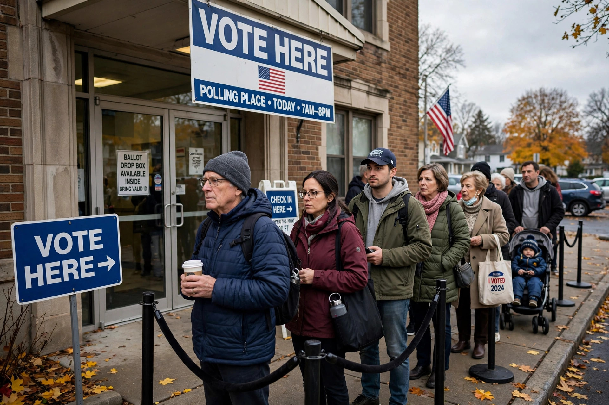

An election day is the day on which general elections are held. In many countries the day is a public holiday or falls on a weekend so that working people can vote; in others, including the United States, federal elections are held on a weekday. Voters unable to attend in person may instead use an absentee ballot or vote early.
For federal offices, election day is the Tuesday after the first Monday in November — that is, between 2 and 8 November. Congress fixed this date for presidential elections in 1845, and it was later extended to elections for the House of Representatives and the Senate. Nearly all state and local elections in the United States are held on the same day.
The choice of a Tuesday in early November reflected the rhythms of a 19th-century agrarian society. Sunday was reserved for worship, Wednesday was market day in many towns, and travelling to the county seat to vote might take a full day by horse and cart. Monday was therefore impractical for travel, leaving Tuesday. November came after the harvest and before winter weather made roads impassable.
Weekday voting is criticised for depressing turnout among workers who cannot take time off. Proposals debated in the United States include making election day a federal holiday, moving it to a weekend, or extending voting over several days; a number of states require employers to give workers paid time off to vote. Many democracies hold elections on Saturdays or Sundays — Australia votes on Saturday, France on Sunday — and several declare the day a public holiday. Whether a holiday or weekend vote measurably raises turnout is disputed by political scientists, though same-day registration and early voting reliably do.
Polls close at different times across time zones, and counting — of in-person votes, early votes and mail ballots received under state deadlines — may continue for days in close contests, although projections by news organisations usually identify winners on election night.
Absentee ballot · Voting by mail in the United States · Ballot box